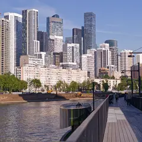
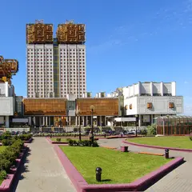
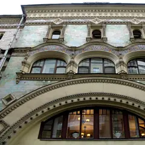
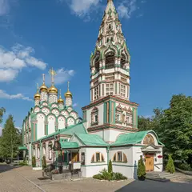
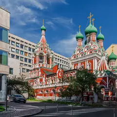
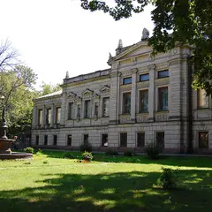
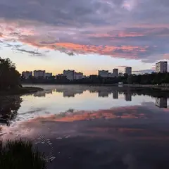
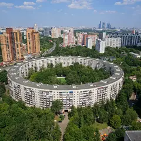
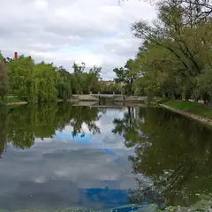

Подборка редакции · Москва
Места из ленты
Кадры, под которыми спрашивают «где это?»: Сити над рекой с набережной у «Берегового», изразцовый терем во дворе Тверской, пряничные храмы XVII века, смотровая над излучиной у Академии наук и неоготические башни Михалкова. Почти всё бесплатно.
- 13 мест
- до 1 500 ₽ на человека
Что в подборке 13

Береговой пр., 5 (набережная)
Новое
Набережная на Филях прямо напротив Москва-Сити: деревянный настил у воды, а за рекой — вся стена небоскрёбов. Тот самый кадр из ленты; лучше всего на закате, когда башни загораются.
Подробнее и маршрут: Набережная у ЖК «Береговой»Позвать сюда: Набережная у ЖК «Береговой»
Фото: Retired electrician, CC0 · Wikimedia Commons

Ленинский пр., 32А
Новое
Площадка над Андреевской набережной у «золотых мозгов» Академии наук: излучина реки, Нескучный сад, Лужники и Сити на горизонте. Туристов почти нет, вход свободный в любое время.
Подробнее и маршрут: Смотровая у Президиума РАНПозвать сюда: Смотровая у Президиума РАН
Фото: Михаил Иванович Лукин, CC BY 4.0 · Wikimedia Commons

Тверская ул., 6, стр. 6 (вход через арку)
Новое
Сказочный терем в изразцах, спрятанный во дворе за сталинским фасадом Тверской: в 1939 году дом целиком передвинули вглубь квартала. Проход — через арку дома 6; двор жилой, снимайте тихо.
Подробнее и маршрут: Саввинское подворьеПозвать сюда: Саввинское подворье
Фото: NVO, CC BY-SA 3.0 · Wikimedia Commons

ул. Льва Толстого, 2
Новое
Пряничный храм ткацкой слободы: зелёно-оранжевые наличники, кокошники и шатровая колокольня. Зимой на снегу — как открытка; рядом усадьба Толстого.
Подробнее и маршрут: Церковь Николая Чудотворца в ХамовникахПозвать сюда: Церковь Николая Чудотворца в Хамовниках
Фото: A.Savin, Free Art License · Wikimedia Commons

Никитников пер., 3
Новое
Узорочье XVII века среди офисов Китай-города: красно-белый резной декор, зелёные главки и крыльцо под шатром. Пять минут от метро, но о нём мало кто знает.
Подробнее и маршрут: Церковь Троицы в НикитникахПозвать сюда: Церковь Троицы в Никитниках
Фото: Sachkv, CC BY-SA 4.0 · Wikimedia Commons
Калашный пер., 2/10
Новое
Башня с росписью «Нигде кроме как в Моссельпроме» — рекламой Маяковского и Родченко 1920-х. Лучший ракурс — из Калашного переулка снизу вверх; иногда фасад в лесах реставрации.
Подробнее и маршрут: Дом МоссельпромаПозвать сюда: Дом Моссельпрома
Фото: Andrey Kryuchenko, CC BY-SA 3.0 · Wikimedia Commons
ул. Воздвиженка, 16
Новое
Особняк 1899 года в неомавританском стиле: подковообразный портал с витыми колоннами и башни, украшенные «ракушками». Внутрь не пускают, фасад хорошо виден с Воздвиженки.
Подробнее и маршрут: Особняк Арсения МорозоваПозвать сюда: Особняк Арсения Морозова
Фото: Елена Нечипоренко, CC BY-SA 4.0 · Wikimedia Commons

Новая Басманная ул., 14, стр. 1
Новое
Купеческий особняк 1890-х с готическими и мавританскими залами: фасад можно снимать с улицы, внутрь пускают только на экскурсии. Здесь снимали «Битву экстрасенсов».
Подробнее и маршрут: Особняк СтахееваПозвать сюда: Особняк Стахеева
Фото: Sigwald, CC BY-SA 4.0 · Wikimedia Commons
Курсовой пер., 1
Сказочный терем Малютина у Храма Христа Спасителя: павлины, древнерусские боги и райские птицы на фасаде.
Подробнее и маршрут: Дом ПерцовойПозвать сюда: Дом Перцовой
Фото: Никонико962, CC BY-SA 4.0 · Wikimedia Commons
Крутицкая ул., 8
Тихие дворики, изразцовый теремок и старинные стены — машина времени посреди города. Вход свободный, особенно атмосферно в сумерках.
Подробнее и маршрут: Крутицкое подворьеПозвать сюда: Крутицкое подворье
Фото: Дмитрий Мозжухин, CC BY 3.0 · Wikimedia Commons

Михалковская ул., 38
Новое
Усадьба XVIII века у Головинских прудов: красные неоготические башни и ограда — кусочек замка посреди спального района. Территория и пруды открыты, внутрь — только с экскурсией.
Подробнее и маршрут: Усадьба МихалковоПозвать сюда: Усадьба Михалково
Фото: Lapovod, CC BY 4.0 · Wikimedia Commons

Нежинская ул., 13
Новое
Девятиэтажное кольцо диаметром около 155 метров: из середины двора дом замыкает весь горизонт. Во двор ведут шесть арок; это жилой двор, так что снимать стоит тихо.
Подробнее и маршрут: Дом-кольцо на НежинскойПозвать сюда: Дом-кольцо на Нежинской
Фото: Михаил Колобаев, пресс-служба Правительства Москвы, CC BY 4.0 · Wikimedia Commons

Новодевичий пр., Москва
Пруды у стен Новодевичьего монастыря — одна из самых красивых прогулок в Москве.
Подробнее и маршрут: Новодевичьи прудыПозвать сюда: Новодевичьи пруды
Фото: Uwe Brodrecht, CC BY-SA 2.0 · Wikimedia Commons


Как позвать
- Выбери план, место или событие — в карточке адрес, цены и маршрут в Яндекс Картах.
- Нажми «Позвать сюда» — соберётся приглашение-игра для свидания или голосование для компании.
- Отправь ссылку в любой мессенджер: тебе ответят, а компания отметит, куда и когда может. Бесплатно и без регистрации.